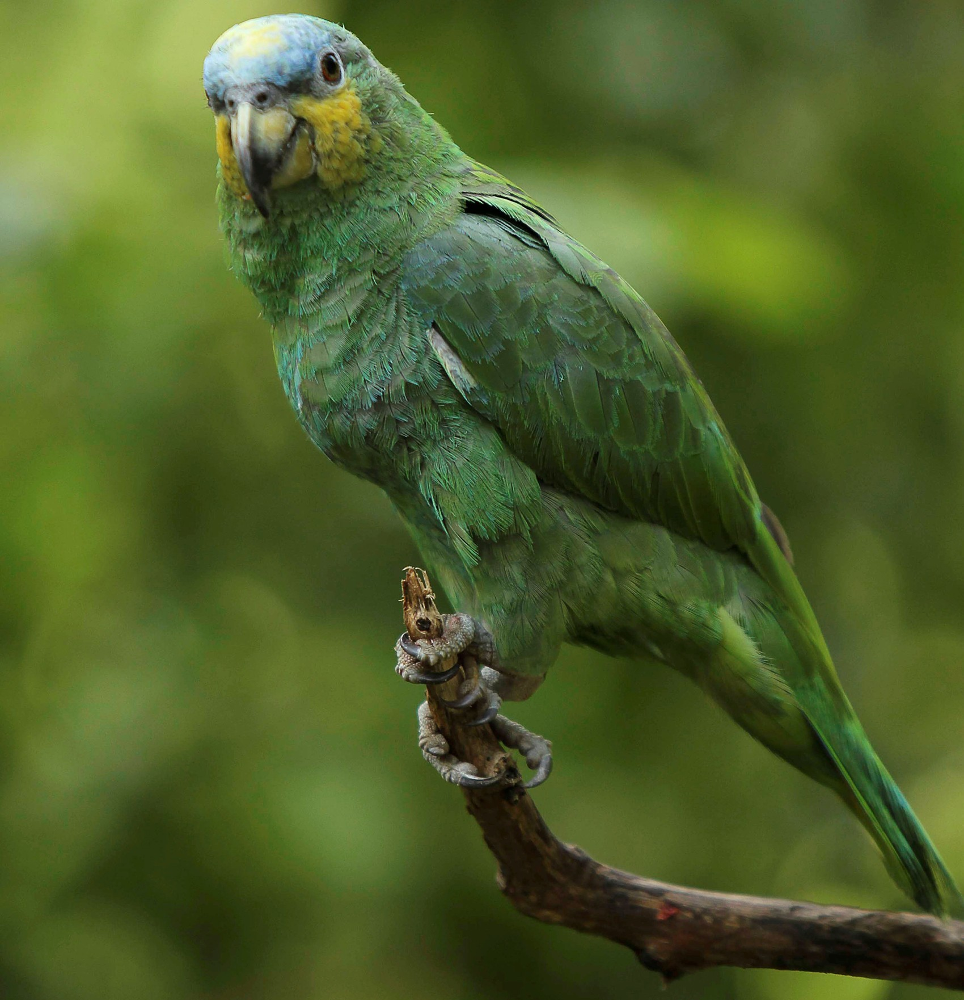

papagaio

10 Curiosidades sobre o papagaio.
1
Os papagaios conseguem imitar com exatidão os sons de seres humanos.
2
Os papagaios conseguem dançar espontaneamente, seguindo o ritmo de uma música.
3
Os papagaios são aves que podem viver quase ou mais tempo que os seres humanos, podendo chegar aos 100 anos ou mais, dependendo do local e das condições onde vivem.
4
O sexo dos papagaios só pode ser identificado através de exames de laboratório.
5
Existem 12 espécies de papagaios no Brasil, o mais comum é o “papagaio-verdadeiro”, que pode ser encontrado no Piauí e Rio Grande do Sul.
6
Os papagaios, em sua maioria, são canhotos – seguram o alimento com o pé esquerdo e se equilibram com o direito.
7
Existem sinais comuns de emoções que podem ser facilmente identificados pelos donos. Eles reproduzem comportamentos que indicam satisfação ou raiva e são consideradas aves sensíveis, chegando a demonstrar ciúmes de outros animais de estimação.
8
Os filhotes nascem com cor desbotada, e somente depois de 8 meses é que começam a apresentar as cores dos adultos. Eles ficam no ninho sendo alimentados pelos pais até completarem 2 meses.
9
O Brasil já foi considerado a terra do papagaio na época do Brasil Colônia.
10